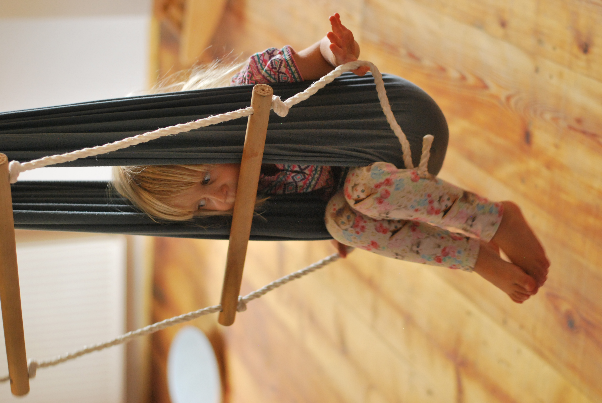

SEED Fejlődési Skála (0-4 év)
A SEED Fejlődési Skála hét terület (Finommozgás, Nagymozgás, Szociális- érzelmi terület, Adaptív- gondolkodói terület, Beszéd és nyelv (expresszív és receptív nyelvi funkció), Táplálkozás, Öltözködés- tisztálkodás) felmérésével ad információt a gyermek erősségeiről, gyengeségeiről, életkori követelményekhez mért érettség szintjéről, illetve képesség struktúrájáról.
Eszközkészlete kifejezetten gazdag, de többnyire olyan típusú játékokat, tárgyakat tartalmaz, amivel egy viszonylag „jól felszerelt” gyerekszoba is rendelkezik (pl.: labda, csörgő, fakocka, gyöngy, dobozok, képeskönyv, puzzle, stb…). A vizsgálat folyamán felkínáljuk (életkorától függő, hogy mit és hogyan) az eszközöket, és megfigyeléseket végzünk azzal kapcsolatban, ahogy a gyermek reagál ezekre, illetve ahogy manipulálni kezd ezekkel. A vizsgálat a szülő jelenlétében történik, ő is kiegészítheti tapasztalataival a látott képet. Jelenlétükben a gyermekek könnyebben oldódnak az esetleges kezdeti szorongásból, a szülő támogathatja a gyermek részvételét.
Iskolaérettségi vizsgálat (5-6 év)

A hatéves kori kötelező beiskolázás elbizonytalanító lehet sok szülő számára. Mi szükséges ahhoz, hogy egy gyermek magabiztosan kezdhesse meg iskolai tanulmányait?
A megfelelő érettségnek testi-, lelki és kognitív tényezői egyaránt vannak. Így vizsgálatunk is komplex, mely során megfigyeljük a gyermek testi, mozgásbeli-, kognitív-, és szociális, érzelmi fejlettségét is. Természetesen ezek nem függetlenek egymástól.
Tapasztalatainkat szóbeli konzultáció és írásos vélemény formájában osztjuk meg a szülővel, ha szükséges az érést támogató javaslatot teszünk.
Szeretnénk felhívni a szülők figyelmét, hogy szakvéleményünk az oktatási rendszerben szabadon felhasználható, azonban abban megfogalmazott javaslataink kötelező érvénnyel nem bírnak az oktatási rendszerben! Az iskolába lépés megkezdésének halasztását a szülőnek az Oktatási Hivatalnál szükséges kezdeményeznie, általában az adott év január közepéig van erre lehetőség.